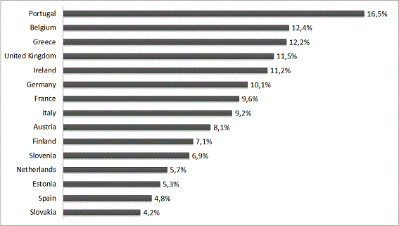
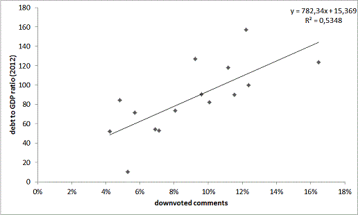

A depressão nacional, vista no Reddit
Incomodado pela quantidade de maus comentários e votos negativos no cantinho português do reddit, resolvi verificar se esta é uma especificidade nacional ou se é simplesmente uma constante no reddit. Pelo caminho, queria também experimentar o iPython Notebook, e esta pareceu-me uma excelente oportunidade.
O reddit tem duas características que o tornam uma mina para quem gosta de brincar com números: uma API pública fácil de usar (nem sequer é necessário registar-se), e um sistema de votação que permite perceber de forma simples qual a avaliação que as pessoas fazem da qualidade de cada link e comentário.
Seleccionei subreddits representativos de 15 países europeus, e calculei a percentagem de comentários com mais downvotes do que upvotes em cada um. Os resultados foram absolutamente claros.

O /r/portugal destaca-se claramente como o subreddit em que mais comentários são considerados "maus". Desde já, quero deixar algumas notas em relação a este cálculo:
- a razão que me levou a fazer este estudo foi ter visto muitos comentários negativos, pelo que posso estar apenas a confirmar uma situação temporária. Valerá a pena repetir os cálculo daqui a algum tempo
- a API do reddit limita o número de comentários devolvidos aos últimos 1000 de cada subreddit (e uma vez que o número de utilizadores de cada subreddit é diferente, estes 1000 corresponderão a um período diferente em cada um). Alternativamente, podia ter analisado os comentários do mesmo período em todos os subreddits. Confesso que a principal razão para ter feito desta forma foi preguiça.
Bem, podemos agora voltar aos números. Achei curioso aparecer Portugal e a Grécia no top 3. Poderá o sentimento no reddit ser influenciado pela situação económica de cada país?
Poderá a dívida nacional causar depressão no reddit? Não contem ao FMI.

Notas técnicas (para evitar o mesmo erro de Reinhart e Rogoff):
- podem ver o Notebook com a recolha de dados do reddit aqui (inclui o código, mas não comentado)
- recolhi dados de todos os países da zona euro com mais de um milhão de habitantes, e do Reino Unidos
- os subreddits seleccionados foram retirados da lista oficial do /r/europe (principal subreddit de cada país, segundo a lista)
- os dados de rácio dívida PIB foram retirados do Eurostat
Agradeço dúvidas/sugestões/comentários.
Comentários
Comments powered by Disqus